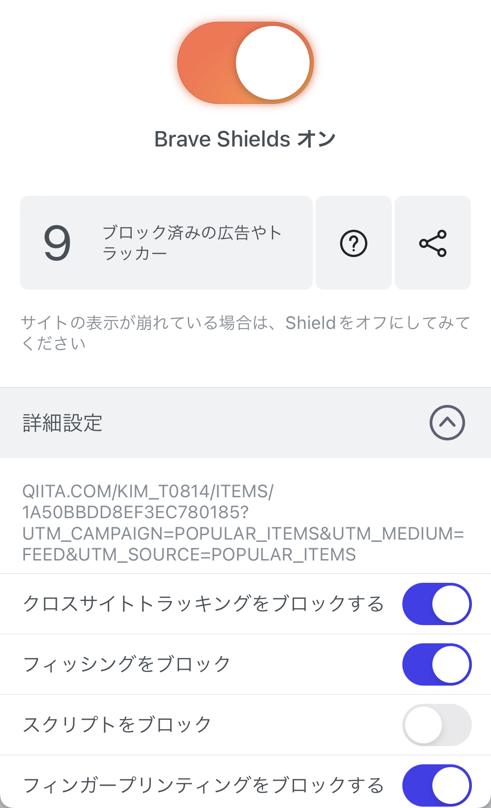

スマホ版Braveって結局どうなの
この記事ではBrave(スマホ版)を3週間ほど使ってみた感想をまとめます。
Braveとは
Brave(ブレイブ)とはブラウザの一つです。ブラウザというのはEdgeやChromeのようにWebページを閲覧するものです。
下のリンクからダウンロードできます。
メリット
まずはメリットからです。
- 広告ブロック
- 動画や音楽などのオフライン再生
- インターフェースのデザイン
まだあるかもしれませんが目立ったものは異常ですかね。一番下は完全に個人の感想ですが…それでは上の内容を一つ一つ紹介していきます。
広告ブロック
一つ目は広告ブロックです。これは謳い文句なので知ってる人も多いと思います。YouTubeやサイトの広告をブロックしてくれます。注意点としては、サイトによっては広告ブロックの解除を促されたり、画像が表示されなかったりします。そう言った場合は、そのサイトの広告ブロックを外してあげてください。
動画や音楽などのオフライン再生
私は、この機能をインストールした後に知りました。どのようなものかというと、「YouTubeなどの動画や音楽を自分のプレイリストに追加できる」というものです。 オフライン再生も可能です(できないようにすることも可能です)。つまり、家などのWi-Fiが繋がった場所であらかじめみたい動画などをプレイリストに入れておけばギガを使わずに動画を外で観れるということです。
プレイリストは複数作ることも可能です。
インターフェースについて
これは個人の感想ですが、インターフェース(UI)が好きでしたね。Edgeよりの少し角の丸みが控えめなかんじのです。
デメリット
次はデメリットです。デメリットとと言うのは、他のブラウザに比べて劣っている点などです。
- ニュースがイマイチ自分にマッチしない
- 少し重い…？
気になった点は以上です。
Braveニュース
これに関してはGoogleが私たちをトラッキングしてるおかげで(？)Chromeのニュースがついみたくなってしますものばかりになってるので仕方ないと思います。それでも一応フォローなどである程度絞り込むことはできます。
少し重い
ChromeやSafariに比べて少し重いですね。まあ色々な機能がついてるのでこれも仕方ないですね。
まとめ
スマホ版のYouTubeはもともと広告がほとんどない印象なので広告ブロックはどちらかと言うとネット記事とかがメインかもしれません。 プレイリストは普通に便利なのでいいブラウザだと思います。ニュースだけChromeやGoogleで見るなどすることをお勧めします(私はそうしています)。